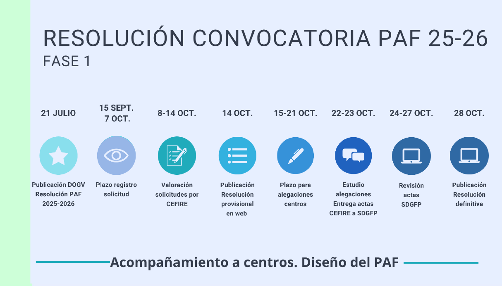

PAF
Organització de la formació¶
- PAFP (Pla Anual de Formació Permanent del Professorat): document marc de Conselleria que fixa les línies generals de formació.
- PAA (Pla Anual d’Actuació dels CEFIRE): concreció anual de la programació formativa de cada CEFIRE.
- PAF (Pla Anual de Formació): planificació formativa anual de cada centre educatiu.
PAF (Pla Anual de Formació)¶
Conjunt d’activitats formatives que un centre educatiu planifica i desenvolupa al llarg del curs.
Rols implicats:
- CFC (Coordinador/a de Formació de Centre): persona responsable de coordinar el PAF en cada centre.
- CAF (Coordinador/a de l’Acció Formativa): responsable de l’organització i seguiment de cada activitat formativa concreta.
Té 3 fases principals:
- Elaboració i sol·licitud del PAF (setembre-octubre)
- Desenvolupament de les activitats formatives (novembre-juny)
- Memòria i tancament (juliol)
Cronograma elaboració del PAF (Convocatòria 25-26)¶

Elaboració i sol·licitud del PAF (amb ITACA3)¶
| Pas | Tasques principals | Participants implicats |
|---|---|---|
| 1 | Detecció i anàlisi de les necessitats formatives del professorat i del centre | CFC · Direcció · Claustre |
| 2 | Concreció del PAF i introducció de les necessitats formatives i persones CAF de les AF a ITACA3 | CFC |
| 3 | Definició i introducció de les persones participants i presentació de l’AF | CAF |
| 4 | Acceptació de la cessió d’espais i aprovació amb data de claustre | Direcció · Secretaria |
| 5 | Presentació oficial del PAF | CFC |
Nota:
Les persones participants han d’acceptar o declinar la participació mitjançant OVIDOC.
Elaboració i sol·licitud del PAF (No ITACA3)¶
| Pas | Tasques principals | Participants implicats |
|---|---|---|
| 1 | Detecció i anàlisi de les necessitats formatives del professorat | CFC · Direcció · Claustre |
| 2 | Concreció del PAF i introducció de les necessitats formatives i persones CAF de les AF | CFC |
| 3 | Definició i introducció de les persones participants i presentació de l’AF | CAF |
| 4 | Acceptació de la cessió d’espais i aprovació amb data de claustre | Direcció · Secretaria |
| 5 | Presentació oficial del PAF | CFC |
Documents necessaris:
- Sol·licitud del Programa d’Activitats Formatives (PAF)
- Projecte de Formació en Centres (PFC)
- Seminari (SEM)
- Grup de Treball (GT)
Modalitats formatives¶
| Modalitat | Definició | Participants | Ponents | Hores |
|---|---|---|---|---|
| Projecte de Formació en Centres | Disseny i posada en pràctica d’actuacions de millora en processos d’ensenyament-aprenentatge | PUC.- Mínim 50% del claustre PIC.- 50% del claustre coordinador + 30% del claustre participant |
- Interns < 60% - Externs ≤ 30% - Interns + externs < 60% |
30-60 |
| Seminari | Reflexió, anàlisi, debat i estudi compartit de qüestions tècniques, educatives o didàctiques | 7 - 15 persones | - Interns < 60% - Externs ≤ 30% - Interns + externs < 60% |
20-30 |
| Grup de Treball | Elaboració i/o anàlisi de materials curriculars i la seua experimentació en situacions reals | 5 - 10 persones | No | 20-30 |
PUC.- Centre únic
PIC.- Intercentres
- La partida econòmica que s’ingressa en el compte dels centres sols es podrà utilitzar en formació, incloent el romanent d’altres anys.
- El pressupost es d'1.000.000€.
- El centre coordinador és el gestor de l'assignació econòmica.
Temàtiques¶
Temàtiques Prioritaries¶
- Competència lectora i escriptora
- Competència matemàtica
- Pensament computacional, programació, robòtica i intel·ligència artificial
- Sostenibilitat ambiental
- Internacionalització
- Gestió i actuacions en cas d’emergència
Temàtiques Estratègiques¶
- Competències professionals docents:
⚬ Ensenyament i aprenentatge
⚬ Desenvolupament integral i benestar emocional de l’alumnat i el professorat
⚬ Compromís professional
⚬ Direcció i lideratge
⚬ Gestió i actuacions en cas d’emergències - Formació relacionada amb les etapes de desenvolupament de la carrera professional:
⚬ Formació bàsica. Dirigida al professorat novell
⚬ Formació contínua. Dirigida a l’actualització docent
⚬ Formació especialitzada. Dirigida a càrrecs de direcció i coordinació d’equip i projectes
Possibilitats de certificació de diferents formacions combinades per participant¶
| Projecte de Formació en Centres (PFC) | Seminari | Grup de Treball | |
|---|---|---|---|
| Projecte de Formació en Centres (PFC) | SÍ (si són de 30 hores) | SÍ | SÍ |
| Seminari | SÍ | NO | SÍ |
| Grup de Treball | SÍ | SÍ | NO |
Un participant podrà certificar 1 o 2 PFCs (si són de 30 hores), un seminari i un grup de treball
Hores que pot certificar un participant
| Modalitat | Mínim | Màxim |
|---|---|---|
| Projecte de Formació en Centres (PFC) | 30 h | 60 h (per any escolar) |
| Seminari | 20 h | 30 h (per any escolar) |
| Grup de Treball | 20 h | 30 h (per any escolar) |
Funcions del CFC i del CAF¶
Funcions del CFC¶
- Fase 1: detecció de necessitats, introducció a ITACA3, selecció de CAF i presentació del PAF.
- Fase 2: suport, supervisió i seguiment de les activitats formatives.
- Fase 3: avaluació del PAF i elaboració de la memòria.
- Coordinació amb el CEFIRE de referència.
Funcions del CAF¶
- Fase 1: registre i planificació de l’activitat formativa a ITACA3, introducció de participants i ponents, presentació de l’AF.
- Fase 2: desenvolupament de les sessions, control d’assistència, redacció d’actes i càrrega a ITACA3.
- Fase 3: tancament de l’activitat i presentació de la memòria final.
- Coordinació amb el CFC.
Informació destacada¶
- Assignació econòmica: es demana la diferència entre necessitats i romanent.
- PAF: L'ha de aprovar el claustre (model de certificat a la pàgina web de Conselleria).També cal informar al Consell Escolar.
- Els centres poden oferir fins a dos PFC de 30h si hi participa el 50% del claustre en cadascun.
- Participants: Transcorregut el 15% de les sessions NO S’ADMETRAN CANVIS EN ELS PARTICIPANTS
Manuals¶
- Manuals disponibles segons el rol i la modalitat:
- CFC : concreció del PAF, supervisió i finalització.
- Planificació i presentació PROJECTE DE FORMACIÓ CENTRES
- Planificació i presentació SEMINARI / GRUP DE TREBALL
- Secretaria: certificació d’AF i presentació del PAF.
Normativa¶
- Resolució 15 juliol 2025: Programa Anual de Formació (PAF).
- Resolució 22 maig 2025: Pla Anual de Formació del Professorat (PAFP).
- Orde 65/2012: model de formació permanent del professorat.
Curs d’acompanyament CFC¶
- Curs obligatori per als CFC. Enllaç al curs
- Objectiu: acompanyament en totes les fases del PAF.